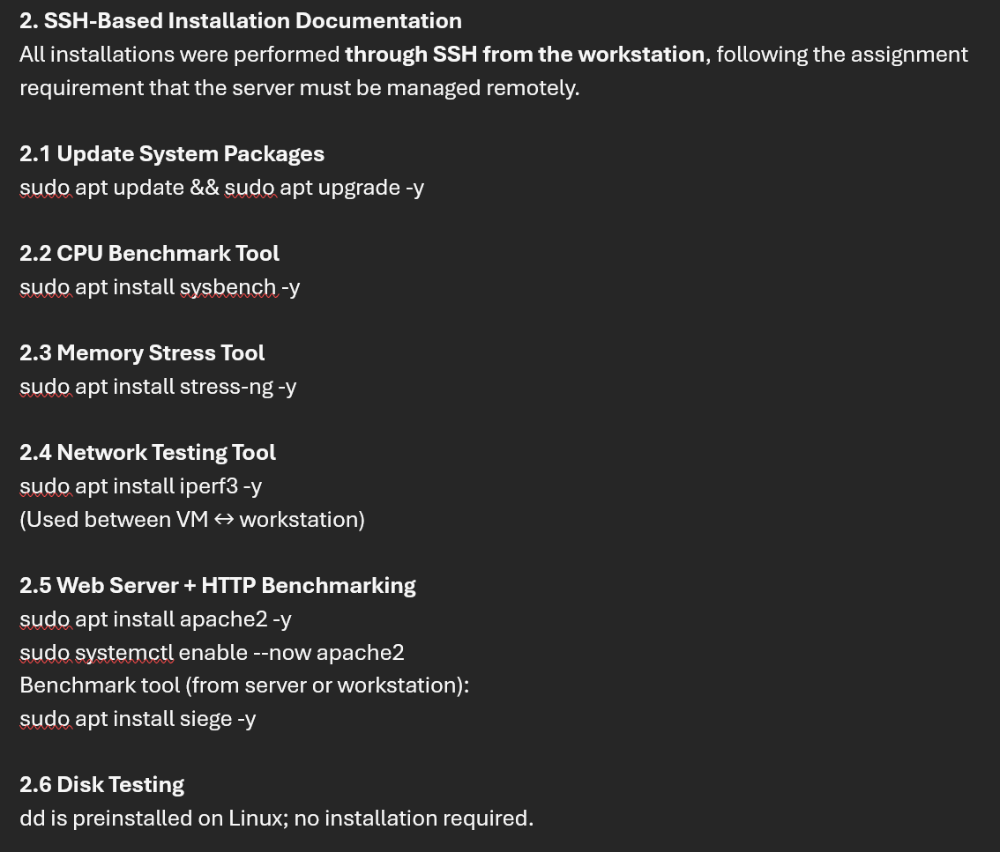
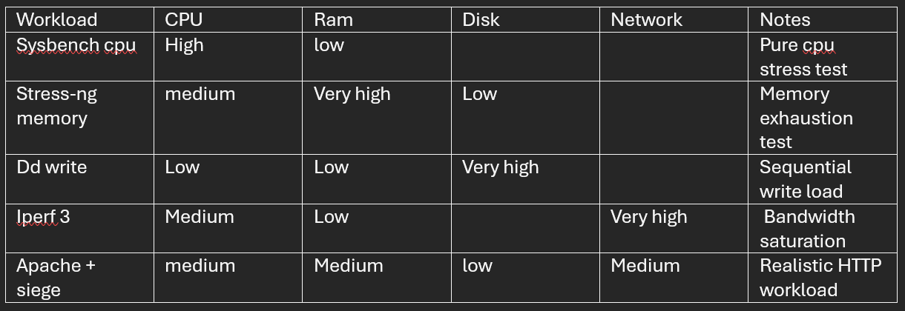
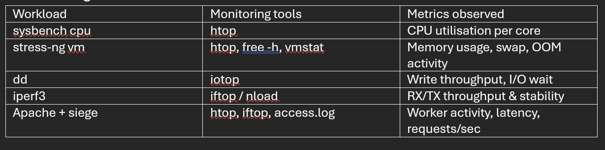
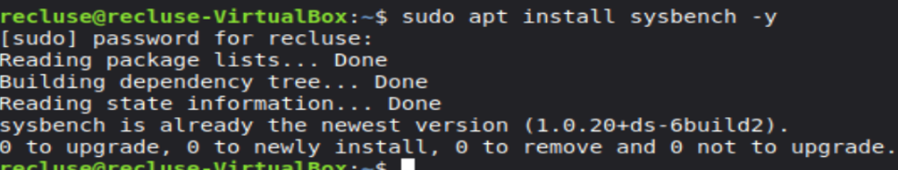
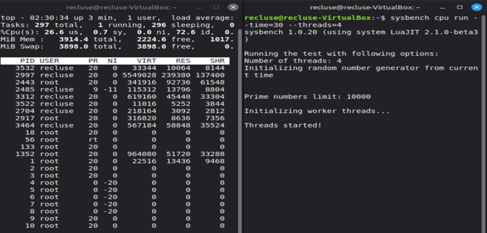

Week 3 focused on selecting representative applications for performance evaluation across CPU, memory,
disk I/O, network, and server workloads. I produced an application selection matrix with justifications,
documented SSH-based installation commands, defined expected resource profiles, and planned a monitoring
strategy to collect consistent measurements during later tests.
Documented installations performed via SSH from the workstation
Defined expected resource profiles per workload type
Mapped monitoring tools and metrics to each workload
Evidence Screenshots
Application selection matrix (workload type → tool selected → reason/justification).

SSH-based installation documentation showing the exact commands used to install each tool.

Expected resource profiles (CPU/RAM/Disk/Network/Notes) for each selected workload.

Monitoring strategy: which monitoring tools were used per workload and which metrics were observed.

Terminal evidence showing sysbench installation status on the VM.

Example workload execution (sysbench CPU) with monitoring output (top) during the run.